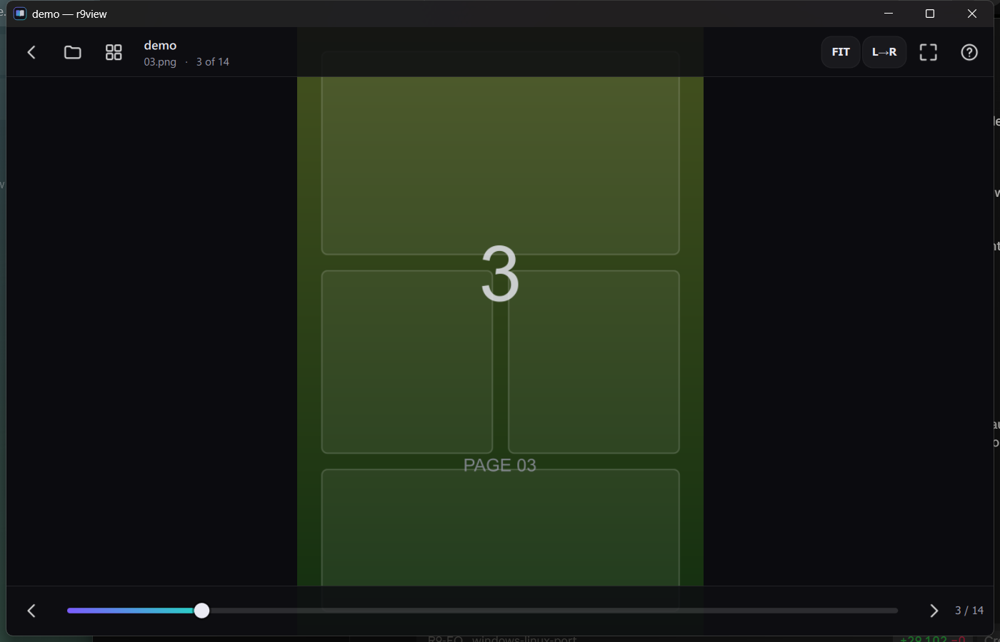
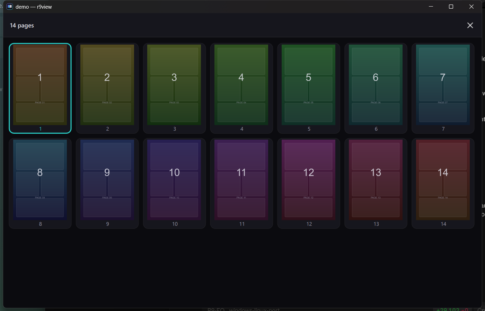
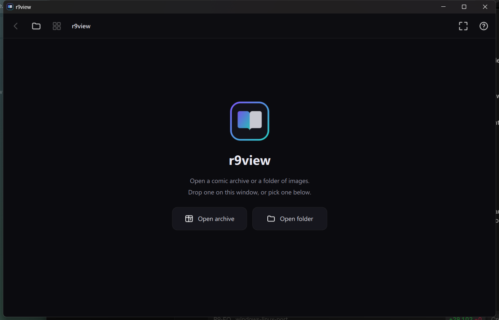

Read comics straight out of a zip.
Point it at a .cbz, .zip, .cbr or .7z and it
reads the images inside, in page order, without unpacking anything first.
It works just as well on an ordinary folder of pictures.
curl -fsSL https://raw.githubusercontent.com/XPro-Gamer-Rhine/r9view/main/install.sh | bash
Installs the build dependencies, compiles, and puts r9view on your PATH
with a desktop entry.
Edge to edge, in its own palette, with the bars getting out of the way a few seconds after you stop touching them.



Pages are decoded straight out of the archive. The reader keeps its position in the stream and walks forward, which is what makes solid 7z and rar archives fast rather than quadratic.
Natural sorting, so 2.webp comes before 10.webp — the thing plain alphabetical sorting gets wrong in almost every comic archive ever made.
Swipe to turn, pinch to zoom, double tap to zoom to a spot. Equally at home with a keyboard and a mouse.
Each book reopens on the page you left it. Nothing is written next to your files — bookmarks live in your config directory.
zip, cbz, rar, cbr, 7z, cb7, tar, cbt. PNG, JPEG, WebP, GIF, TIFF, BMP, SVG, plus AVIF, HEIF, JPEG-XL, PSD, OpenEXR, QOI, DDS, XCF and camera RAW.
Press D to flip the reading direction right to left; the pager, the swipes and the progress bar all follow.
The same bindings on both systems.
| Touch | |
|---|---|
| swipe | turn the page |
| tap the left or right edge | previous / next page |
| tap the middle | show or hide the bars |
| pinch | zoom |
| drag while zoomed | pan around the page |
| double tap | zoom to that spot, and back |
| Keyboard | |
|---|---|
| ← → | previous / next page |
| ↑ ↓ | zoom in / out |
| Space Backspace | next / previous page |
| Home End | first / last page |
| 0 | reset zoom |
| F | cycle fit: page, width, height, actual size |
| D | flip reading order, for manga |
| G | all pages |
| O | open something else |
| F11 | fullscreen |
| Esc | close what is open, then back to the start screen |
Handles Arch (and CachyOS, EndeavourOS, Manjaro), Debian and Ubuntu, Fedora and openSUSE. Put PREFIX=~/.local in front to install just for yourself, with no root at all.
No administrator rights needed. Everything lands under %LOCALAPPDATA%\Programs\r9view, with a Start Menu entry and an Add or remove programs entry. Pass -Uninstall to remove it.
Both scripts fetch a toolchain, compile, and install. On Windows that toolchain is MSYS2 — but the finished application does not depend on it, because every library it needs is copied in beside the executable.
r9view claims .cbz .cbr .cb7 .cbt when nothing else has them, and adds itself to Open with for everything else it reads. It will not take .zip or .jpg away from whatever you already use.